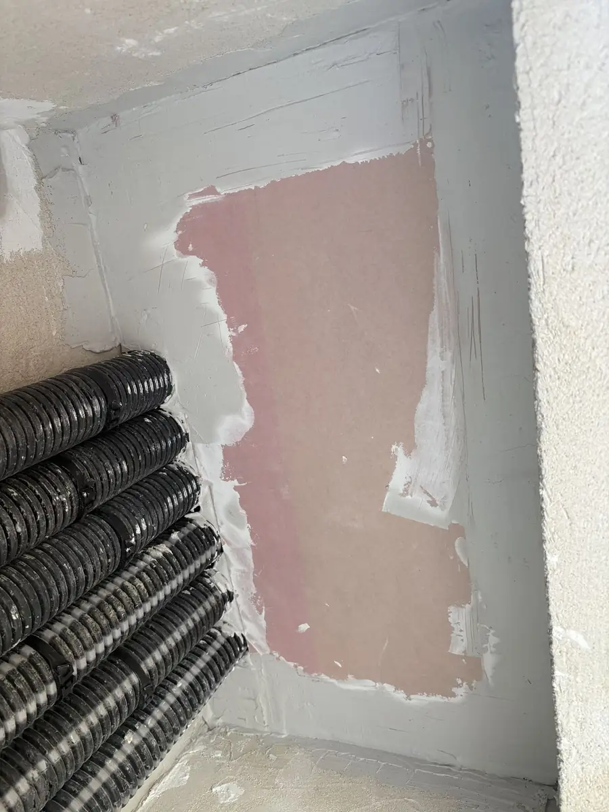
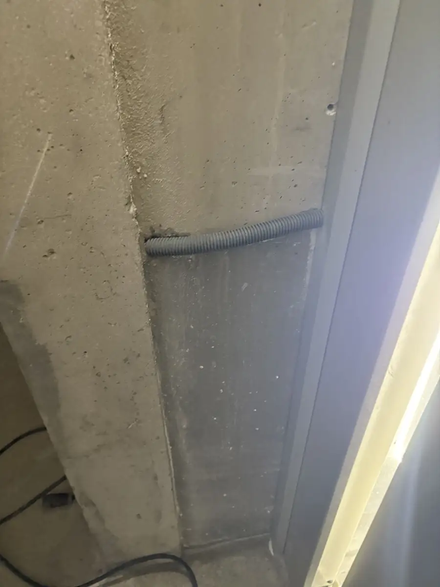

Chantiers · Promoteurs · Entreprises générales · Toute l’Île-de-France
Carottage en urgence : on débloque votre chantier.
Une réservation oubliée, une gaine à faire passer, une livraison qui approche : quand un carottage manque, tout le chantier attend. OF ENTRETIENS se mobilise en délai court partout en Île-de-France — et traite aussi ce qui va avec : traitement coupe-feu des gaines, reprises de doublage et de plâtrerie, rectifications ponctuelles.
Quand nous appeler
Les situations qui ne peuvent pas attendre.
Un carottage, c’est souvent quelques trous. Mais quand il manque, ce sont des corps d’état bloqués, un planning qui glisse et une date de livraison menacée.
-
Une réservation manquante ou mal placée
Le passage prévu n’existe pas, ou pas au bon endroit : il faut percer pour que les réseaux puissent passer.
-
Des gaines et des réseaux à faire passer
Les gaines techniques doivent traverser une dalle ou un voile pour que les lots suivants puissent avancer.
-
Une livraison qui approche
La date de remise des clés ne bouge pas : le point bloquant doit être traité maintenant, pas dans trois semaines.
-
Une reprise à faire autour
Après le percement, il faut reboucher, traiter le coupe-feu et reprendre le doublage pour que l’ouvrage soit conforme et propre.
Ce que nous prenons en charge
Le carottage, et tout ce qui va avec.
Plutôt que de faire intervenir trois entreprises pour un seul problème, une même équipe traite le percement et les reprises qui en découlent.
L’intervention
- Carottages pour le passage des gaines et des réseaux techniques.
- Traitement coupe-feu des gaines traversantes après le passage des réseaux.
- Reprises autour de l’ouvrage : rebouchage, pose de doublage avec bandes, reprises de plâtrerie.
- Rectifications ponctuelles quand le chantier l’exige — par exemple un seuil d’ascenseur.
Notre façon de faire
- Un interlocuteur direct au téléphone, qui comprend un chantier et vous répond clairement.
- Vos consignes respectées : accès, sécurité, co-activité avec les autres corps d’état.
- Une zone laissée propre après intervention — la propreté, c’est notre métier d’origine.
- Des photos de l’intervention transmises à la fin, pour votre suivi.
Un imprévu bloquait l’avancement d’un chantier : notre équipe s’est mobilisée en délai court pour réaliser 5 carottages, poser un panneau de doublage avec bandes, rectifier un seuil d’ascenseur et traiter le coupe-feu de plusieurs gaines. Le chantier a pu continuer d’avancer dans de bonnes conditions.
Nous n’affichons pas de « 24h/24 » ni de délai garanti. Quand vous appelez, nous vous disons franchement quand nous pouvons être sur place — et nous tenons ce que nous annonçons.
Comment ça se passe
De votre appel au chantier débloqué.
Vous appelez ou vous écrivez. Le support (dalle, voile, mur), le nombre et l’emplacement des carottages, l’adresse et l’échéance. Des photos aident beaucoup.
Nous vérifions ensemble les points sensibles. Plans, emplacement des percements, accès au chantier, consignes et horaires.
Nous vous donnons une date d’intervention réaliste. Pas de promesse intenable : un délai que nous savons tenir.
Nous intervenons et nous traitons les reprises. Carottage, coupe-feu, doublage ou plâtrerie selon les besoins, puis nettoyage de la zone.
Nous vous transmettons les photos. Vous savez ce qui a été fait, et le chantier peut reprendre.
Sur le terrain
Reprises et locaux techniques, en vrai.
Des photos prises sur nos chantiers, sans mise en scène.


Questions fréquentes
Carottage en urgence : vos questions, nos réponses.
Intervenez-vous en urgence pour un carottage ?
Oui. Quand un carottage manque et bloque un chantier, nous nous mobilisons en délai court partout en Île-de-France. Nous ne promettons pas de délai garanti : au téléphone, nous vous disons franchement quand nous pouvons être sur place.
Traitez-vous le coupe-feu après le carottage ?
Oui. Nous réalisons le traitement coupe-feu des gaines traversantes après le passage des réseaux, ainsi que les reprises autour de l’ouvrage : rebouchage, doublage avec bandes, plâtrerie.
Quelles informations préparer avant d’appeler ?
Le support à percer (dalle, voile, mur), le nombre et l’emplacement des carottages, l’adresse du chantier, l’échéance et, si possible, des photos et les plans. Cela nous permet de vous répondre vite et précisément.
Pouvez-vous reprendre le doublage ou la plâtrerie autour des percements ?
Oui, l’ensemble des corps d’état est maîtrisé : nous reprenons le doublage, la plâtrerie et les finitions pour que la zone soit propre et prête pour la suite du chantier.
Dans quelles zones intervenez-vous ?
Partout en Île-de-France : Paris (75), Seine-et-Marne (77), Yvelines (78), Essonne (91), Hauts-de-Seine (92), Seine-Saint-Denis (93), Val-de-Marne (94) et Val-d’Oise (95). Notre siège est à Montfermeil (93).
Contact
Décrivez-nous votre carottage.
Pour une urgence, le plus rapide reste le téléphone. Sinon, décrivez votre besoin ci-dessous : nous vous rappelons pour en parler concrètement.
- Téléphone06 62 06 93 22
- E-mailmike.ofentretiens@gmail.com
- Siège8 avenue des Frères Lumière
93370 Montfermeil
Interventions dans toute l’Île-de-France - Instagram @ofentretiens — suivez nos interventions